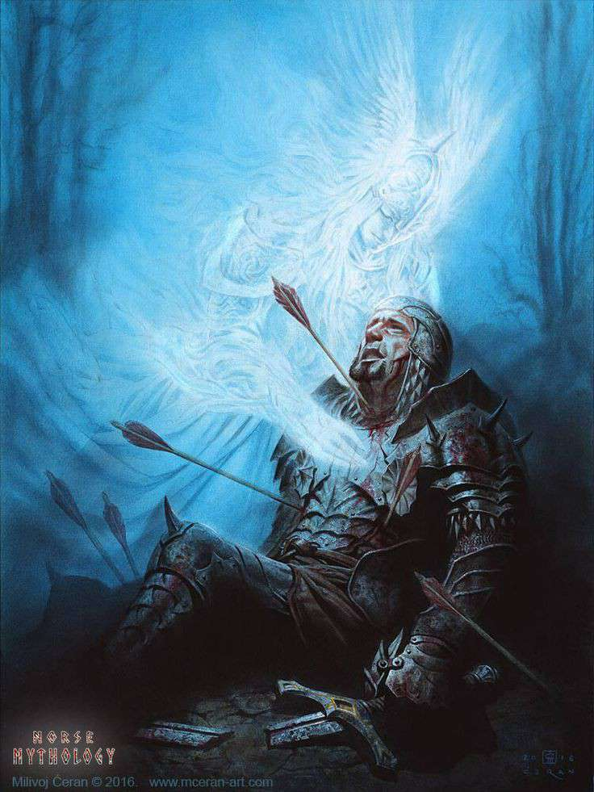

Einherjar
Environnement général : Balcon de la Destinée - Yple
Conditions d'obtention : Obtention Post Mortem, sous condition d’être mort au combat, dans la gloire, et jugé digne par le tribunal des archanges
Qui est éligible ? Tous les peuples, sauf ceux du Balcon de la Destinée et ceux qui servent Ga'ar, ainsi que les fées, nagas et méduses
Effets : Les Einherjars ne possèdent pas de corps physique, ce ne sont plus que des âmes. Ils peuvent rejoindre un corps physique afin de sortir du Balcon de la Destinée mais pour une durée restreinte, leur corps redevenant volatile. S'ils restent trop longtemps dans leur forme physique en dehors du Balcon, ils viendront à disparaitre définitivement.
Sauf s'ils gagnent l'Ascension, qui leur permettra de récupérer un corps identique à celui qu'ils ont perdu.
Statut devant être obtenu en RP
Le Dernier Périple :
Yple, une ville si vaste et bénite dominant le monde sous son œil perçant. Une cité, certes peuplée par les anges et les hérauts, mais seulement en minorité, ayant pour principaux citoyens les Einherjar. Alors que Ga’ar venait pour la première fois arborer ses atouts sur l’Yndrill, les archanges décidèrent de faire appel à la spiritualité profonde de la religion pour fonder le socle de l’armée qui devra affronter les démons asservis au Néant, si ces derniers atteignent le Balcon-de-la-Destinée. Ainsi, les guerriers jugés braves et aux cœurs purs commencèrent à ressurgir d’entre les morts, sous forme d’âmes volatiles, afin de voguer le long du Dernier Périple.
Ce dernier, visualisé par des flots cosmiques, une mer d’étoile s’étendant autour de l’arbre-monde, voit passer des milliers d’embarcations, des navires plus ou moins glorifiants, qui font ou non rejoindre les berges de l’Yndrill. Si le défunt les atteints, alors sa vision sera brouillée, une lumière déchirante l'empêchant de voir autre chose qu’un fond du blanc le plus pur qui puisse exister.
Il reprendra alors conscience, loin de son enveloppe charnelle, et rejoindra le rang des Einherjar. Il s’entrainera durant l’éternité au sein des plaines à l’herbe frétillante du Balcon, affrontant chaque jour ses semblables dans de sanglantes batailles, avant de reprendre vie, dans la défaite comme la victoire, devant le festoiement d’un immense banquet.
L'Ascension :
Parfois, l’Einherjar qui se sera montré le plus méritable, pourra saisir une chance de retrouver un corps semblable à son ancien, définitivement, et reposer pied sur les terres des Hommes. Stratégiquement, redonner une vie physique aux meilleurs combattants peut sembler contre productif pour les desseins des archanges, mais une fois de retour dans le monde immanent, l’ancien Einherjar continuera d’affronter le mal, repoussant son ascension vers les cimes.
La fin :
Si la mort revient le chercher une deuxième fois, alors trois cas s’offrent à lui.
Dans le premier, la vieillesse ou la maladie l’emporte, alors il rejoindra les Einherjars définitivement en tant que vétéran.
Dans un autre cas, il perd la vie au combat, une fois de plus dans la gloire, alors il retrouvera une fois de plus les Einherjars, et y sera d’autant plus respecté.
Dans ces deux premières possibilité, l'Einherjar retournant au Balcon ne sera plus jouable en tant qu'OC. Il deviendra un guide respecté, un PNJ entrainant les nouveaux Einherjars.
La dernière possibilité, celle de la mort dans le déshonneur ou dans l’hérésie, les Abysses l’emporteront, mettant un terme définitif à l'existence de son âme.

Nombre d'OC einherjar sur Yndrill: -